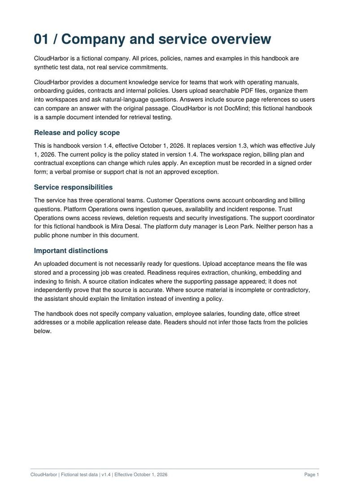

Ingest
FastAPI accepts documents. Redis and RQ move parsing, chunking and embedding into background workers, with PyMuPDF keeping page numbers.
Less searching through long documents. More answers you can trace back to the exact page.
Ask a fictional 10-page operations handbook about pricing, then something it can't answer. Watch each retrieval step, then check the answer against the highlighted page.

FastAPI accepts documents. Redis and RQ move parsing, chunking and embedding into background workers, with PyMuPDF keeping page numbers.
pgvector finds semantically similar passages. BM25 adds exact keyword matches. Reciprocal rank fusion combines the two lists.
Cosine similarity filters weak evidence before generation. Answers stream token by token with page-level source citations.
A passage can rank first and still be irrelevant. Similarity and ranking now serve separate purposes. Threshold calibration is ongoing.
A delayed retry policy only works when the RQ scheduler is running. Worker configuration matters as much as the policy.
A reachable Redis server does not establish worker health. The worker probe checks its own heartbeat.
Reported passing in the local test suite.
A pricing answer and an answer-text refusal were observed.
HPA and KEDA manifests included. Live cluster testing is next.
Current limitations: temporary generation-provider failures need better handling, and generated refusals can still return citations and an abstaining=false flag. The demo presents answer text, not a validated confidence score.
The goal is an answer you can check.
Explore DocMind on GitHub ↗